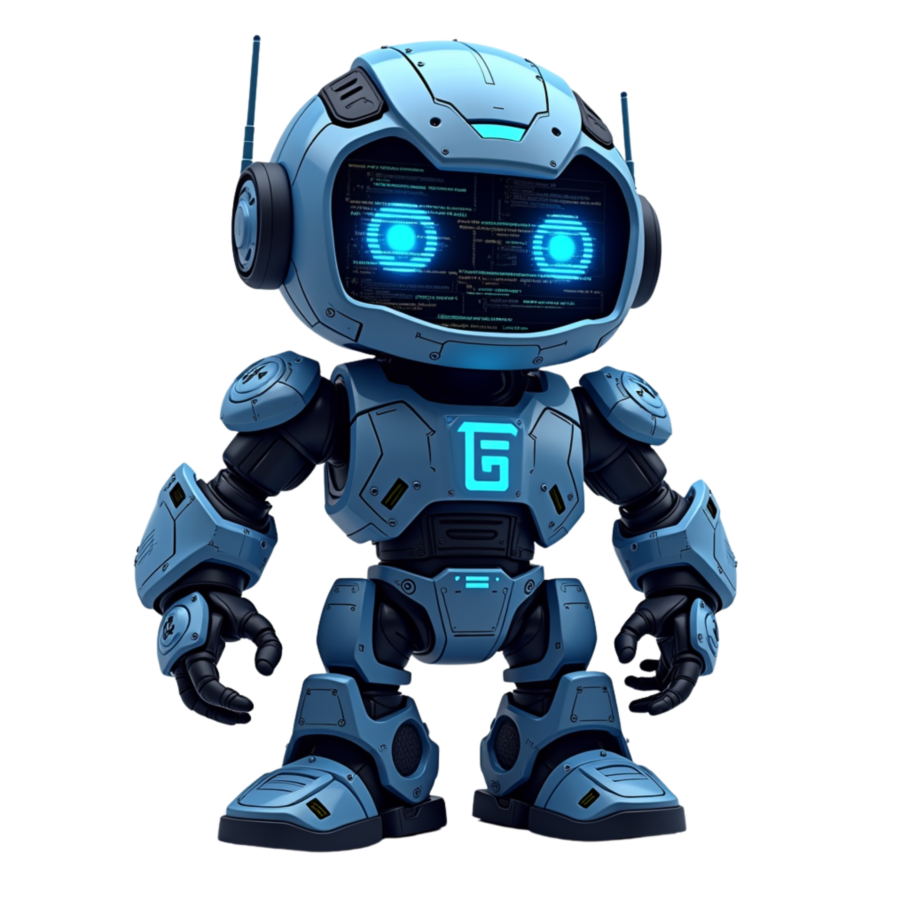
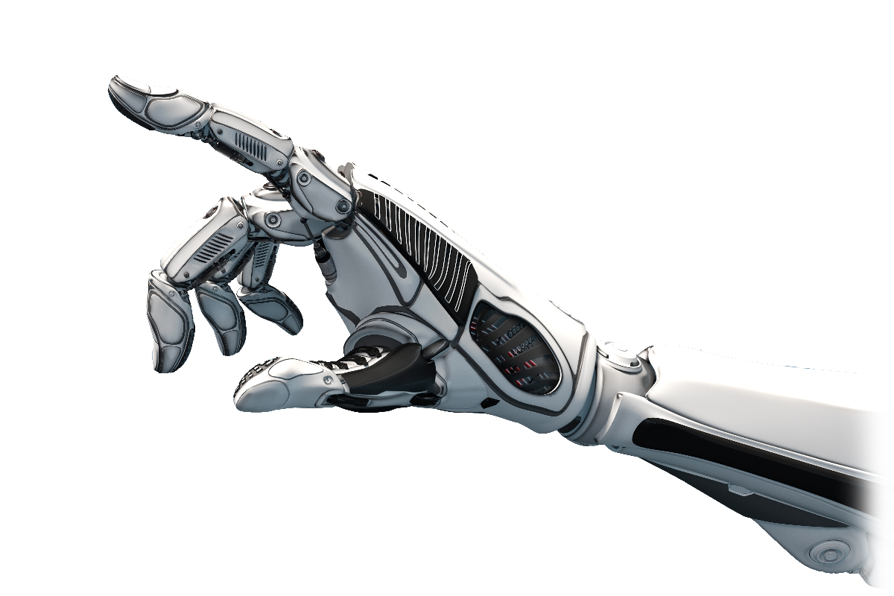

¿Qué es la Robotica?
La robótica es la rama de la ciencia y la ingeniería que diseña, construye y programa robots capaces de realizar tareas de forma autónoma o asistida.

¿Cómo fue creada?
La robótica nació como una combinación de ideas antiguas sobre máquinas automáticas y avances modernos en mecánica, electrónica e informática, consolidándose como disciplina en el siglo XX.
Primeros Antecedentes Historicos
La idea de crear máquinas que imiten acciones humanas es muy antigua. Aunque no eran “robots” en el sentido moderno, varios inventores imaginaron y construyeron autómatas mecánicos:
- Grecia antigua: Se describieron mecanismos automáticos como los de Herón de Alejandría, que diseñó dispositivos movidos por aire, vapor o pesos
- Edad Media y Renacimiento: Relojeros e ingenieros crearon figuras mecánicas capaces de moverse, tocar instrumentos o escribir, como los autómatas de Al-Jazari y los de relojería europea.
- Siglo XVIII: Autómatas más complejos, como el “Turco mecánico” o los muñecos de Vaucanson, mostraron el interés por máquinas que parecieran inteligentes, aunque fueran trucos o mecanismos limitados.
.png)
Funcionamiento
La robótica funciona gracias a la integración de mecánica, electrónica e informática, que juntas permiten que un robot perciba su entorno, procese información y actúe físicamente de manera controlada.
- Mecánica: estructura y movimiento
- Electrónica: sensores, control y energía
- Informática: inteligencia y toma de decisiones

Futuros Proyectos
Los futuros proyectos de la robótica se centran en robots más autónomos, colaborativos e inteligentes, capaces de integrarse en la vida diaria, la industria, la salud y la exploración espacial.
- Robótica en salud
- Robótica industrial y colaborativa
- Movilidad y vehículos autónomos
- Robótica doméstica y asistencial
- Robótica agrícola
- Robótica para exploración espacial
Programación de Robots
La programación de robots consiste en definir cómo un robot percibe, decide y actúa, usando lenguajes, métodos y herramientas que permiten controlar sensores, actuadores y algoritmos de movimiento.
Lenguajes más usados en robótica:
- C++: Alta eficiencia y control de hardware, ideal para tiempo real
- Python: Sintaxis simple, ideal para prototipos, IA y uso con ROS
- Java: Portabilidad y uso en robots de servicio o educativos
- MATLAB: Simulación y control avanzado
- Lenguajes propietarios: RAPID (ABB), KRL (KUKA), TPE/Fanuc, VAL3, usados en industria por seguridad y precisión